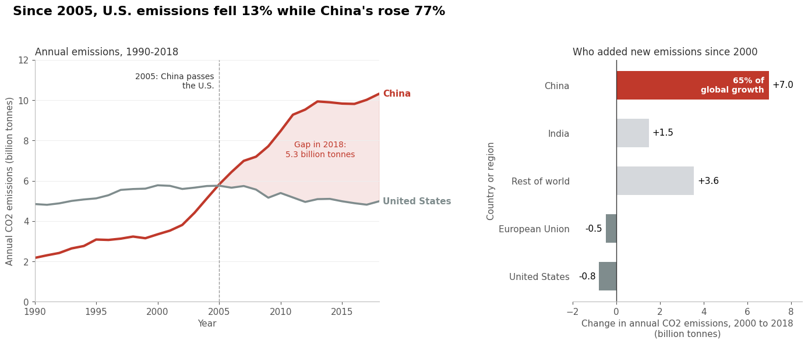
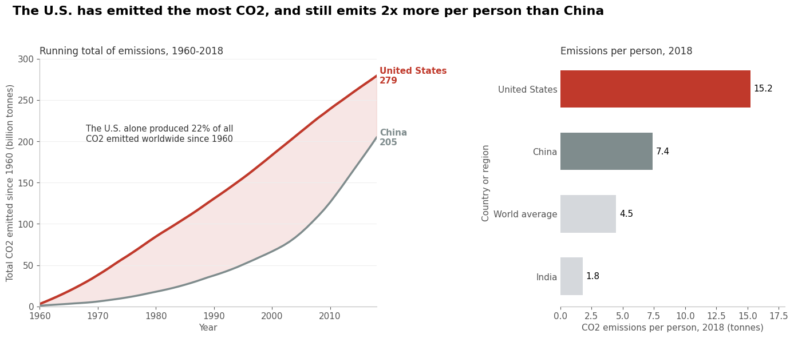

Proposition: China, not the United States, is now the main obstacle to cutting global CO2 emissions.
FOR the Proposition

Design Decisions and Rationale:
- Starting the line chart in 1990 instead of 1960 (score: -1.5). The dataset goes back to 1960, and the U.S. emitted more than China every single year until 2005. Starting in 1990 cuts out most of these decades, so the chart reads as "the U.S. stayed flat while China took off." I considered showing the full 1960-2018 range, but it made the U.S. look like the bigger long-term emitter, which works against this side.
- Using percent change since 2005 in the title (score: -1). The title says U.S. emissions fell 13% while China's rose 77%. I chose 2005 because it is the year China passed the U.S., so it reads like a turning point. Percentages also hide that the U.S. still emitted about 5 billion tonnes in 2018, which is about half of China's total from a country with about a quarter of China's population. I considered using absolute numbers in the title, but "fell 13%" next to "rose 77%" is a cleaner contrast.
- Showing change in emissions instead of total emissions (score: -1). By plotting how much each country's emissions changed between 2000 and 2018, the U.S. becomes a negative bar (-0.8), which makes it look like part of the solution. In 2018 the U.S. was still the second largest emitter in the world. I considered a bar chart of 2018 totals, but then the U.S. bar would be the second tallest, which weakens the argument.
- Choosing which countries and regions to show (score: -0.5). China and India really are the two countries with the largest increases (India's +1.5 is about five times the next country, Indonesia). However, I compared them against the European Union, which is a bloc of 27 countries, so Western decline looks bigger and more unified than any single European country's. Every other country is grouped into a gray "Rest of world" bar placed below India, even though it is the second largest increase (+3.6). This keeps China visually alone at the top. I explain how "Rest of world" was calculated in the caption, so the grouping is transparent if you read closely.
- Color, shading, and direct labels (score: +0.5). China is the only element in red, and everything else is gray, which draws the eye to China as the problem. The shaded area between the lines after 2005 makes the growing gap easy to see, and I labeled each line directly instead of using a legend so the chart is quicker to read. The color choice is persuasive, but the shading and labels are honest readability choices, so overall I scored this slightly earnest.
AGAINST the Proposition

Design Decisions and Rationale:
- Using cumulative emissions since 1960 (score: +1). CO2 stays in the atmosphere for centuries, so the total amount a country has emitted over time is a reasonable way to measure responsibility for climate change. Adding up every year from 1960 to 2018 shows the U.S. at 279 billion tonnes compared to China's 205, and I calculated that the U.S. produced 22% of all CO2 emitted worldwide in that period. I think this framing is mostly earnest.
- Showing a running total as a line chart with the gap shaded (score: -0.5). The U.S. line stays above China's for the whole period, and the shaded area emphasizes how far ahead the U.S. is. A running total smooths out the fact that China's annual emissions have been about double the U.S.'s in recent years. I considered a simple bar chart of the final totals like in my checkpoint, but the line chart makes it look like the U.S. has been "in the lead" for 60 straight years.
- Normalizing by population (score: +0.5). Emissions per person account for China having more than four times as many people as the U.S. In 2018, the average American emitted 15.2 tonnes compared to 7.4 for the average person in China. This is a fair comparison, but it also hides the fact that China's total emissions are much larger, which is the number that matters most for the atmosphere.
- Only showing four comparison rows for per-person emissions (score: -1.5). I only showed the U.S., China, the world average, and India, which makes the U.S. look like the top emitter per person. In the actual data, the U.S. ranks 11th, behind countries like Qatar, Kuwait, Canada, and Australia. I left those out because they would distract from the U.S.-versus-China comparison, but this is the most deceptive choice in this figure because readers would assume the U.S. is number one.
- Combining two claims in one title (score: -0.5). The title says the U.S. "has emitted the most CO2, and still emits 2x more per person than China." Both parts are true, but putting them together with "still" makes it sound like the U.S. is the worst emitter both historically and today, even though China emits far more in total today. I considered separate titles for each panel, but one combined headline makes a stronger argument.
Final Reflection
The most straightforward part of this project was finding data that supported each side, because the data itself was never the problem. Every number in both of my figures is accurate and comes directly from the World Bank dataset. The difficult part was realizing how much the same numbers could be pushed in opposite directions just by choosing a start year, a baseline, or what to divide by. For the FOR figure, starting in 1990 and measuring change since 2005 made China look like the obvious problem. For the AGAINST figure, adding up emissions since 1960 and dividing by population made the U.S. look like the bigger problem. I also used the same layout and the same red highlight in both figures, just pointed at different countries, and it was surprising how well the identical design worked for both arguments. For my checkpoint I kept the charts very simple, but adding calculated fields like share of growth and running totals made both arguments much stronger, which also made them more persuasive in ways that were harder to notice.
What surprised me most was that the most deceptive choices were not visual tricks like truncated axes or distorted scales. They were decisions about what to leave out. In the per-person chart, nothing shown is false, but by only including four rows I hid that the U.S. actually ranks 11th. In the growth chart, India really is the second largest contributor, but grouping every other country into a gray "Rest of world" bar kept China visually alone at the top. I also caught myself making claims I had not checked. In my checkpoint I described 2005 as the U.S. peak year, but when I went back to the raw data the peak was actually 2000. This made me realize how easy it is to repeat a convenient story without verifying it, even when you are the one making the chart.
I now think of ethical analysis and visualization as making choices that you could explain and defend to a reader who knew everything you knew. Every visualization has to choose a time range, a baseline, and which comparisons to show, so there is no truly neutral version. The line I would draw is this: a persuasive choice is acceptable if the reader's main conclusion would still hold after seeing what was left out, and it is misleading if the conclusion would change. Cumulative emissions passes this test, because it is a defensible way to measure historical responsibility and the U.S. would still lead even with more context. Showing only four countries for per-person emissions fails it, because a reader who saw the full ranking would no longer believe the U.S. is the worst per person. Being transparent about transformations, like explaining how "Rest of world" was calculated in the caption, helps, but I don't think disclosure alone is enough if the main visual impression is still misleading.